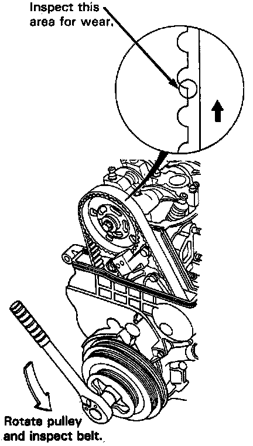

Timing Belt: Testing and Inspection
Timing Belt - Inspection1. Disconnect the alternator terminal and the connector, then remove the engine wire harness from the cylinder head cover.
2. Remove the cylinder head cover.
3. Remove the upper cover.

4. Inspect the timing belt for cracks and oil or coolant soaking.
NOTE:
- Replace the belt if oil or coolant soaked.
- Remove any oil or solvent that gets on the belt.
5. After inspecting, retorque the crankshaft pulley bolt to 250 N.m (25.0 kg-m, 181 lb-ft).